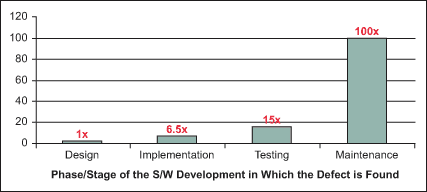
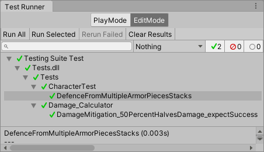
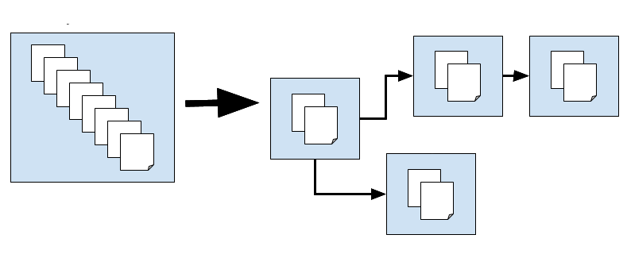
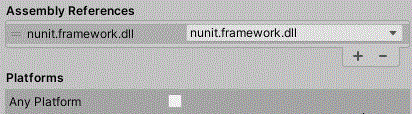

Testing
Are we recording?

Review
What is Game Feel about?
- It's about enchancing the moment to moment gameplay
- It's about maximum output for minimum input
Review
Name 3 ways of achieving good game feel
- Sound Effects
- Screen Shake
- Tweening
Testing Definition
- Checking if the actual result of a program matches the expected result
Why test?
- A program does what you say, NOT what you want
- Prevents bugs from becoming worse and more obscure
- Verifies functionality
- Gives you a feeling of security that your game will not crash and burn on startup
The cost of a bugfix scales up exponentially
Source
Important!
Having 100% code coverage(the % of code covered by tests) does not mean your code works as intended.
That can only be achieved through formal verification.
(But formal verification is very hard 😢)
Types of Testing
- General Types:
- Unit Testing
- Integration Testing
- Games-Specific Types:
- Playtesting
- Edit Mode Testing
- Play Mode Testing
Arrange, Act, Assert
The AAA (Arrange, Act, Assert) pattern is a common way of writing unit tests
- The Arrange section sets up the test parameters
- The Act section invokes the tested method with the arranged parameters
- The Assert section verifies that the method behaved as expected
Test Runner
- The Unity Test Runner is a tool that tests your code in both Edit mode and Play mode
- Available from the Unity Test Framework package
- Accessed under Window/General/Test Runner

Test Runner Usage Details
- From the Test Runner menu create a folder where the Edit/Play mode tests will be
-
Since the tests will be compiled into a different assembly
they can't reference your regular scripts by default
- You must create an Assembly Definition in your Scripts folder and add it to the Assembly Definition References of the tests Assembly Definition
Assembly Definition
- When you create an Assembly Definition in a folder, Unity compiles a separate assembly from all the scripts in that folder
- While Assembly Definitions have other benefits we will use them only so that test scripts can reference regular scripts

Documentation
NUnit
- A popular unit-testing framework for all .NET languages
- For our purposes we will use:
- [Test] to indicate a test method
- The Assert class for the Assert section
- [SetUp] for the Arrange section
- [TearDown] to clean up resources
- Further details here
Unit Testing Example
public static bool IsPalindrome(string str) {
char[] strReverse = str.ToCharArray();
Array.Reverse(strReverse);
return str.Equals(new string(strReverse));
}
//...
[Test]
public void ababaIsAPalindrome() {
// Arrange
string palindrome = "ababa";
// Act
bool actualResult = IsPalindrome(palindrome);
// Assert
Assert.IsTrue(actualResult);
}Edit Mode vs Play Mode tests
- Edit Mode Tests:
- Don't enter Play Mode
- Don't use the primary event loop
- Play Mode Tests:
- Enters Play Mode
- Use the primary event loop
Testing a MonoBehaviour
// Instantiating a MonoBehaviour with new gives a warning
// Instead you should use:
MyComponent x = new GameObject().AddComponent<MyComponent>();Handling Dependencies
- Unit tests have to be executed in isolation
- Objects having any kind of dependency makes this difficult
- For example if enemies only work when there is an internet connection then how do you test the enemies?
- Enter Mocking
Mocking
- Mocking is creating objects that simulate the behavior of real objects
- We pass these mocked objects to the object we want to test
- This way the object can be tested in isolation
Not just verifying state
When testing you generally only look if the state changed properly. When mocking you can also verify if the expeced methods were called or the expected events triggered.
NSubstitute
- A popular .NET mocking library
- Further details here
- For our purposes we will use:
// To create mocks
MyInterface myObj = Substitute.For<MyInterface>();
// To mock method return values
myObj.MyMethod().Returns(expectedResult);
// To mock void methods
myObj.When(x => x.MyMethod()).Do(x => {...});
// To check if a method was called
myObj.Received().MyMethod();Using NSubstitute
- You can get the .dll from here
- Add it to your project
- Add it to the Assembly References in the Tests Assembly Definition

UnityTest
- A UnityTest behaves like a coroutine in Play Mode
- Can be used in both Play Mode and Edit Mode
Mocking Play Mode Test Example
// Custom Input interface intended to be mocked when testing
public interface ICustomInput {
float GetVerticalInput();
}
// A default implementation of the above interface
public class CustomInput : ICustomInput {
public float GetVerticalInput() {
return Input.GetAxisRaw("Vertical");
}
}
public class Movement : MonoBehaviour {
// The field which willbe mocked when testing
public ICustomInput customInput { get; set; }
= new CustomInput();
void Update() {
transform.position += Vector3.up
* customInput.GetVerticalInput()
* Time.deltaTime;
}
}
[UnityTest]
public IEnumerator TestMovementUp() {
// Setup the scene by instantiating a prefab
// form the Resources folder
GameObject player = GameObject.Instantiate(
Resources.Load<GameObject>("Prefabs/Player"));
// Add the Movement script to it (which we are testing)
Movement movement = player.AddComponent<Movement>();
// Get a mock of ICustomInput
ICustomInput customInput = Substitute.For<ICustomInput>();
// Mock the GetVerticalInput method to always return 1
customInput.GetVerticalInput().Returns(1);
// Inject the mocked customInput into the object
// that we are testing
movement.customInput = customInput;
// Wait a bit so that the Update method inside
// the Movement script can execute a few times
yield return new WaitForSeconds(1);
// Assert thet we have actually moved up
Assert.IsTrue(player.transform.position.y > 0,
"Did not move");
// Verify that GetVerticalInput was actually called
customInput.Received().GetVerticalInput();
}Problems with testing
- Time Consuming
- Tests are often longer than the actual code
- Refactoring has to include the tests
Testing styles
There are two major testing styles concerning dependency handling. The first is using real objects for every test and the second is testing in isolation using mocks/stubs. Neither is perfect.
Testing in isolation
- Obvious what is wrong when a test fails
- No false positives for failed tests
- Doesn't test if the units work correctly together
- Tests are tightly coupled with implementation
Non isolation tests
- A domino of failing tests when a test fails thus it can be harder to find the cause of the problem
- Sometimes bugs in one unit are found when it interacts with other units
- You can easily do black box testing
Visual Comparison